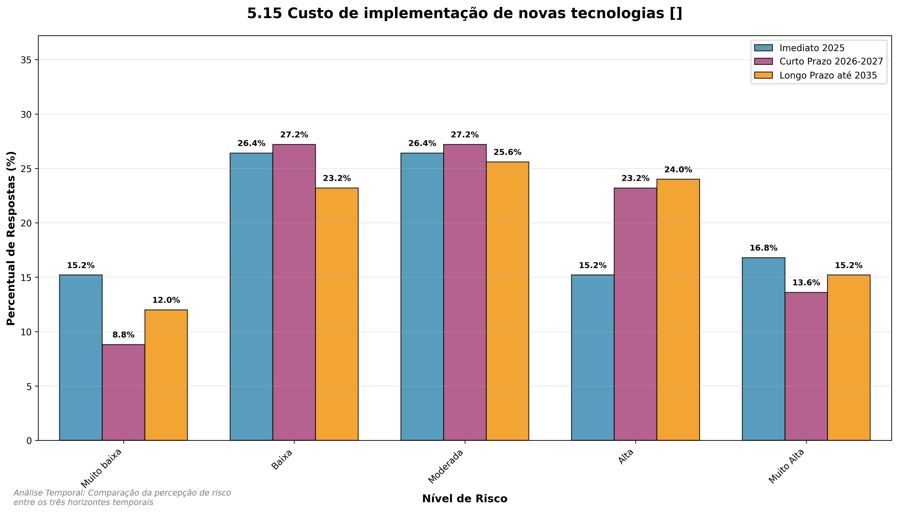

11 Análise de Riscos Tecnológicos
Este capítulo apresenta a análise dos riscos tecnológicos identificados organizados por horizontes temporais.
11.1 Visão Geral dos Riscos Tecnológicos
Os riscos tecnológicos foram avaliados em três horizontes temporais:
- Imediato (2025): Riscos que requerem atenção imediata
- Curto Prazo (2026-2027): Riscos emergentes que demandam planejamento
- Longo Prazo (até 2035): Riscos estratégicos que requerem visão de futuro
11.2 Panorama do Período Imediato

- Atraso no processo de digitalização: 33,6% em níveis altos
- Vulnerabilidades em comunicação e IoT: 32,8% em níveis altos
- Consequências indesejáveis de tecnologias: 20,0% em níveis altos
11.3 Análise Temporal da Dimensão Tecnológica

A dimensão tecnológica apresenta padrões temporais complexos que refletem tanto os desafios da transformação digital quanto as oportunidades de inovação no setor portuário.
11.3.1 Insights da Análise Temporal Tecnológica
A análise temporal dos riscos tecnológicos revela padrões de evolução digital e adaptação:
11.3.1.1 Piora Tecnológica Controlada
- Delta médio de +0,20: Piora moderada em comparação com outras dimensões
- 1 variável com piora crítica (+1.0 ponto): Ataques cibernéticos e ransomware
- Tendência de deterioração gradual: A maioria dos riscos mostra piora progressiva
11.3.1.2 Padrões Específicos Identificados
- Cibersegurança como Principal Preocupação: Ataques cibernéticos evoluem de mediana 2.0 para 3.0
- Desafios de Automação: Falhas em sistemas de automação mantêm-se persistentemente altas
- Gap de Competências Tecnológicas: Falta de mão de obra qualificada mostra piora consistente
11.3.1.3 Destaques da Evolução Temporal
- Risco Mais Crítico em 2035: Falhas em sistemas de automação e controle (44.8% em risco alto)
- Maior Crescimento Relativo: Ataques cibernéticos e ransomware (+130.4% no risco alto)
- Transformação Digital Urgente: Atraso no processo de digitalização mantém-se elevado
11.3.1.4 Implicações Estratégicas para a Dimensão Tecnológica
A análise temporal tecnológica exige investimentos estratégicos:
1. Fortalecimento da Cibersegurança: Implementar defesas multicamadas e monitoramento contínuo
2. Modernização de Sistemas: Acelerar transição para plataformas digitais integradas
3. Desenvolvimento de Talentos: Investir em capacitação técnica e programas de retenção
4. Autonomia Tecnológica: Reduzir dependência de fornecedores e desenvolver soluções próprias
11.4 Exame das Variáveis de Risco: Resultados e Tendências
11.4.1 Consequências indesejáveis pela aplicação de tecnologias ou IA

Imediato (2025): Mediana 2.0, 18.4% em risco alto
Curto Prazo (2026-2027): Mediana 3.0, 30.4% em risco alto
Longo Prazo (até 2035): Mediana 3.0, 42.4% em risco alto
- Tendência: Percepção de risco relativamente estável ao longo do tempo
Análise - Consequências indesejáveis pela aplicação de tecnologias ou IA Imediato (2025): Devido a consequências iniciais pela aplicação de tecnologias ou IA, poderá acontecer a ocorrência pontual de falhas ou vieses limitados, o que poderá levar a decisões não ideais ou pequenos incidentes operacionais, impactando de forma controlada a eficiência e segurança das operações portuárias brasileiras.
Curto prazo (2026-2027): Devido a consequências indesejáveis pela aplicação de tecnologias ou IA no setor portuário brasileiro, poderá acontecer a ocorrência de falhas operacionais, vieses algorítmicos ou usos indevidos, o que poderá levar a decisões não ideais, discriminações pontuais ou vulnerabilidades de segurança, impactando de forma moderada a eficiência, equidade e integridade das operações portuárias no curto prazo (2026 a 2027).
Longo prazo (até 2035): Devido a consequências indesejáveis pela aplicação de tecnologias ou IA no setor portuário brasileiro, poderá acontecer a ocorrência de falhas sistemáticas, vieses operacionais ou usos indevidos, o que poderá levar a decisões não ideais, discriminação setorial ou falhas de segurança cibernética, impactando de forma moderada a eficiência, equidade e segurança das operações portuárias ao longo do horizonte até 2035, demandando monitoramento contínuo e aprimoramento das práticas de governança tecnológica.
11.4.2 Consequências adversas de tecnologias avançadas (física, biotecnologia, geoengenharia)

Imediato (2025): Mediana 2.0, 16.0% em risco alto
Curto Prazo (2026-2027): Mediana 2.0, 16.8% em risco alto
Longo Prazo (até 2035): Mediana 3.0, 28.8% em risco alto
Análise - Consequências adversas de tecnologias avançadas (física, biotecnologia, geoengenharia) Imediato (2025): Devido a consequências iniciais relacionadas ao uso de tecnologias avançadas (física, biotecnologia, geoengenharia), poderá ocorrer o emprego inadequado ou pouco controlado dessas tecnologias, o que poderá levar a impactos ambientais, sociais e econômicos limitados, com efeitos restritos à sustentabilidade e à segurança das operações portuárias e de seu entorno no setor brasileiro.
Curto prazo (2026-2027): Devido a consequências iniciais relacionadas a tecnologias avançadas (física, biotecnologia, geoengenharia), poderá ocorrer o uso inadequado ou pouco monitorado dessas inovações, o que poderá levar a impactos ambientais, sociais e operacionais limitados, impactando de forma controlável a sustentabilidade e a segurança das operações portuárias brasileiras e seu entorno.
Longo prazo (até 2035): Devido a consequências adversas de tecnologias avançadas (física, biotecnologia, geoengenharia), poderá acontecer o uso inadequado ou insuficientemente regulado dessas tecnologias no ambiente portuário brasileiro, o que poderá levar a impactos ambientais e sociais moderados, além de desafios operacionais e econômicos, impactando na sustentabilidade e na segurança das operações portuárias e do seu entorno ao longo do período até 2035.
11.4.3 Consequências indesejáveis pela aplicação de tecnologias ou IA (censura e vigilância)

Imediato (2025): Mediana 2.0, 15.2% em risco alto
Curto Prazo (2026-2027): Mediana 2.0, 21.6% em risco alto
Longo Prazo (até 2035): Mediana 3.0, 30.4% em risco alto
Análise - Práticas de censura e vigilância adversa Imediato (2025): Devido a práticas iniciais de censura e vigilância no setor portuário brasileiro, poderá acontecer restrições pontuais na divulgação de informações sensíveis e monitoramento moderado, o que poderá levar a limitações na privacidade de trabalhadores e comunidades, impactando de forma restrita os direitos individuais e a transparência do setor.
Curto prazo (2026-2027): Devido a práticas iniciais de censura e vigilância no setor portuário brasileiro, poderá acontecer restrições pontuais na divulgação de informações sensíveis e monitoramento moderado, o que poderá levar a impactos limitados na privacidade de trabalhadores e comunidades, afetando de forma controlada os direitos individuais e a transparência do setor no curto prazo (2026 a 2027).
Longo prazo (até 2035): Devido a práticas persistentes de censura e vigilância adversa no setor portuário brasileiro, poderá acontecer restrições moderadas na divulgação de informações sensíveis e monitoramento contínuo, o que poderá levar a um comprometimento parcial da privacidade de trabalhadores e comunidades locais, impactando nos direitos individuais e na transparência operacional ao longo do período até 2035.
11.4.4 Falta de segurança computacional e de comunicação

Imediato (2025): Mediana 3.0, 41.6% em risco alto
Curto Prazo (2026-2027): Mediana 3.0, 45.6% em risco alto
Longo Prazo (até 2035): Mediana 3.0, 44.0% em risco alto
Análise - Falta de segurança computacional e de comunicação Imediato (2025): Devido a vulnerabilidades ainda presentes na segurança computacional e de comunicação, poderão ocorrer incidentes cibernéticos como tentativas de invasão e interrupções temporárias nos sistemas, o que poderá levar à alteração parcial de dados operacionais ou à indisponibilidade momentânea de serviços essenciais, impactando a eficiência e a continuidade das operações nos portos brasileiros.
Curto prazo (2026-2027): Devido à persistente vulnerabilidade em segurança computacional e de comunicação nos portos brasileiros, poderá ocorrer incidentes cibernéticos moderados, como tentativas de invasão e comprometimento parcial de dados, o que poderá levar à interrupção temporária de sistemas operacionais ou à degradação da integridade das informações, impactando a eficiência e a continuidade das operações portuárias no curto prazo.
Longo prazo (até 2035): Devido a vulnerabilidades persistentes na segurança computacional e de comunicação, poderá acontecer incidentes cibernéticos como invasões e interrupções de sistemas, o que poderá levar à manipulação de dados operacionais ou indisponibilidade temporária de plataformas digitais, impactando a eficiência e a continuidade das operações nos terminais portuários brasileiros.
11.4.5 Concentração dos direitos sobre tecnologias

Imediato (2025): Mediana 2.0, 19.2% em risco alto
Curto Prazo (2026-2027): Mediana 3.0, 23.2% em risco alto
Longo Prazo (até 2035): Mediana 3.0, 28.0% em risco alto
Análise - Concentração dos direitos sobre tecnologias Imediato (2025): Devido à crescente concentração dos direitos sobre tecnologias, poderá acontecer uma leve dependência tecnológica e restrições iniciais ao acesso a inovações, o que poderá levar a desafios pontuais na modernização e a uma autonomia estratégica ainda preservada, impactando de forma limitada a competitividade e o desenvolvimento dos portos brasileiros no curto prazo.
Curto prazo (2026-2027): Devido à concentração dos direitos sobre tecnologias, poderá ocorrer uma dependência moderada de fornecedores externos e restrições no acesso a inovações tecnológicas, o que poderá levar a desafios na atualização dos sistemas portuários e limitações na autonomia operacional, impactando a eficiência e a competitividade dos portos brasileiros no curto prazo.
Longo prazo (até 2035): Devido à concentração dos direitos sobre tecnologias, poderá ocorrer uma dependência moderada de fornecedores externos, limitando o acesso a inovações tecnológicas e dificultando a incorporação de avanços nos sistemas portuários brasileiros, o que poderá levar a desafios na modernização e na manutenção da autonomia estratégica, impactando de forma moderada a eficiência operacional e a competitividade dos portos no longo prazo.
11.4.6 Vulnerabilidades dos sistemas de comunicação e dispositivos IoT

Imediato (2025): Mediana 3.0, 32.8% em risco alto
Curto Prazo (2026-2027): Mediana 3.0, 40.0% em risco alto
Longo Prazo (até 2035): Mediana 3.0, 44.8% em risco alto
- Tendência: Percepção de risco relativamente estável ao longo do tempo
Análise - Vulnerabilidades dos sistemas de comunicação e dispositivos IoT Imediato (2025): Devido a vulnerabilidades conhecidas nos sistemas de comunicação e dispositivos IoT utilizados em terminais e operações portuárias brasileiras, poderá acontecer incidentes de cibersegurança com interrupções pontuais nos serviços, o que poderá levar a atrasos operacionais e aumento dos riscos à integridade das operações, impactando a eficiência e a segurança no curto prazo.
Curto prazo (2026-2027): Devido a vulnerabilidades existentes nos sistemas de comunicação e dispositivos de Internet das Coisas (IoT) utilizados nas operações portuárias brasileiras, poderá acontecer falhas moderadas em cibersegurança, o que poderá levar a ataques cibernéticos localizados e interrupções parciais de serviços, impactando na segurança operacional e na continuidade das atividades portuárias no curto prazo (2026 a 2027).
Longo prazo (até 2035): Devido a vulnerabilidades persistentes nos sistemas de comunicação e dispositivos de Internet das Coisas (IoT) utilizados no setor portuário brasileiro, poderá acontecer falhas de cibersegurança com frequência moderada, o que poderá levar a incidentes cibernéticos que causem interrupções temporárias nos serviços e afetem a eficiência operacional, requerendo monitoramento contínuo e estratégias de mitigação para assegurar a resiliência das operações até 2035.
11.4.7 Atraso no processo de digitalização dos portos

Imediato (2025): Mediana 3.0, 33.6% em risco alto
Curto Prazo (2026-2027): Mediana 3.0, 37.6% em risco alto
Longo Prazo (até 2035): Mediana 3.0, 34.4% em risco alto
- Tendência: Percepção de risco relativamente estável ao longo do tempo
Análise - Atraso no processo de digitalização dos portos Imediato (2025): Devido ao ritmo moderado no avanço da digitalização dos portos brasileiros, poderá ocorrer redução parcial na eficiência operacional e na capacidade de integração com cadeias logísticas globais, o que poderá levar a aumentos controlados nos custos e a limitações na competitividade do setor, impactando de forma moderada o desenvolvimento econômico e a modernização portuária no curto prazo.
Curto prazo (2026-2027): Devido a atrasos moderados no processo de digitalização dos portos brasileiros, poderá acontecer uma redução parcial na eficiência operacional e na competitividade, o que poderá levar a aumentos controlados nos custos logísticos e a dificuldades pontuais na integração com cadeias globais, impactando de forma moderada o desenvolvimento econômico e a modernização do setor portuário no curto prazo.
Longo prazo (até 2035): Devido a um ritmo moderado no avanço da digitalização dos portos brasileiros, poderá ocorrer uma redução gradual na competitividade e na eficiência operacional, o que poderá levar a custos operacionais mais elevados e a uma integração menos ágil com as cadeias logísticas globais, impactando de forma moderada o desenvolvimento econômico e a modernização do setor portuário até 2035.
11.4.8 Consequências indesejáveis pela aplicação de tecnologias ou IA (censura e vigilância)

Imediato (2025): Mediana 2.0, 20.0% em risco alto
Curto Prazo (2026-2027): Mediana 3.0, 25.6% em risco alto
Longo Prazo (até 2035): Mediana 3.0, 31.2% em risco alto
- Tendência: Percepção de risco relativamente estável ao longo do tempo
Análise - Consequências indesejáveis pela aplicação de tecnologias ou IA (censura e vigilância) Imediato (2025): Devido a consequências iniciais pela aplicação de tecnologias ou IA, como práticas pontuais de censura e vigilância, poderá acontecer o uso limitado e controlado dessas tecnologias no ambiente portuário brasileiro, o que poderá levar a impactos restritos na privacidade e na liberdade de informação, impactando minimamente os direitos dos trabalhadores e a reputação do setor.
Curto prazo (2026-2027): Devido a consequências indesejáveis pela aplicação de tecnologias ou IA, como práticas moderadas de censura e vigilância no ambiente portuário, poderá acontecer o uso inadequado de sistemas automatizados para monitoramento de trabalhadores e operações, o que poderá levar a restrições parciais na privacidade e no acesso à informação, impactando nos direitos laborais e na confiança institucional do setor portuário brasileiro no curto prazo (2026 a 2027).
Longo prazo (até 2035): Devido a consequências indesejáveis pela aplicação de tecnologias ou IA, como práticas moderadas de censura e vigilância, poderá acontecer o uso inadequado de ferramentas digitais no ambiente portuário brasileiro, o que poderá levar a restrições parciais na privacidade e no acesso à informação, impactando de forma moderada os direitos dos trabalhadores e a imagem do setor no longo prazo.
11.4.10 Riscos associados às tecnologias espaciais

Imediato (2025): Mediana 2.0, 21.6% em risco alto
Curto Prazo (2026-2027): Mediana 3.0, 30.4% em risco alto
Longo Prazo (até 2035): Mediana 3.0, 36.8% em risco alto
Análise - Riscos associados às tecnologias espaciais Imediato (2025): Devido aos riscos iniciais associados às tecnologias espaciais, poderá acontecer a exposição pontual das cadeias logísticas portuárias brasileiras a vulnerabilidades como falhas temporárias de sinal, o que poderá levar a pequenas interrupções operacionais localizadas, impactando de forma limitada a segurança e a continuidade do comércio exterior.
Curto prazo (2026-2027): Devido aos riscos associados às tecnologias espaciais, poderá acontecer a exposição das cadeias logísticas portuárias brasileiras a vulnerabilidades como instabilidades temporárias de sinal ou tentativas de interferência cibernética, o que poderá levar a interrupções pontuais nas operações e na coordenação logística, impactando na eficiência operacional e na continuidade do comércio exterior.
Longo prazo (até 2035): Devido aos riscos associados às tecnologias espaciais, poderá acontecer a exposição das cadeias logísticas portuárias brasileiras a vulnerabilidades operacionais, como falhas temporárias de sinal ou tentativas de interferência cibernética, o que poderá levar a interrupções parciais nas operações e na coordenação logística, impactando na segurança e continuidade do comércio exterior de forma moderada e exigindo monitoramento constante e medidas de mitigação adequadas.
11.4.11 Riscos associados à automação portuária

Imediato (2025): Mediana 3.0, 26.4% em risco alto
Curto Prazo (2026-2027): Mediana 3.0, 32.8% em risco alto
Longo Prazo (até 2035): Mediana 3.0, 43.2% em risco alto
Análise - Riscos associados à automação portuária Imediato (2025): Devido à crescente adoção da automação nos portos brasileiros, poderá acontecer a manifestação de vulnerabilidades cibernéticas e falhas operacionais pontuais, bem como maior dependência de sistemas tecnológicos específicos, o que poderá levar a interrupções moderadas nas operações e a desafios na gestão da continuidade dos processos logísticos, impactando a eficiência e a confiabilidade das cadeias de suprimentos no curto prazo.
Curto prazo (2026-2027): Devido à crescente automação nos portos brasileiros, poderá acontecer a exposição moderada do setor a vulnerabilidades cibernéticas e falhas sistêmicas pontuais, além de uma dependência tecnológica em desenvolvimento, o que poderá levar a interrupções operacionais localizadas e atrasos nas cadeias logísticas, impactando a eficiência das operações portuárias no curto prazo.
Longo prazo (até 2035): Devido à crescente adoção da automação nos portos brasileiros, poderá acontecer a exposição do setor a vulnerabilidades cibernéticas e falhas operacionais pontuais, além da dependência crescente de sistemas tecnológicos, o que poderá levar a interrupções moderadas nas operações portuárias e afetar a eficiência das cadeias logísticas nacionais e internacionais.
11.4.12 Problemas de integração de segurança

Imediato (2025): Mediana 3.0, 30.4% em risco alto
Curto Prazo (2026-2027): Mediana 3.0, 37.6% em risco alto
Longo Prazo (até 2035): Mediana 3.0, 43.2% em risco alto
Análise - Problemas de integração de segurança Imediato (2025): Devido a desafios na integração de segurança entre sistemas e agentes portuários, poderá acontecer a ocorrência de falhas pontuais na coordenação da vigilância e na resposta a incidentes, o que poderá levar a vulnerabilidades moderadas frente a ataques cibernéticos e falhas operacionais, impactando na eficiência das operações e exigindo aprimoramento nos protocolos de gestão e comunicação.
Curto prazo (2026-2027): Devido a desafios moderados na integração de sistemas de segurança e na coordenação entre os diversos agentes portuários brasileiros, poderá acontecer a ocorrência de falhas pontuais na vigilância e respostas descoordenadas a incidentes, o que poderá levar a uma vulnerabilidade controlada frente a ataques cibernéticos, sabotagens ou erros operacionais, impactando de forma moderada a continuidade das operações e a confiança dos stakeholders no curto prazo (2026 a 2027).
Longo prazo (até 2035): Devido a desafios persistentes na integração de segurança entre sistemas e atores portuários, poderá acontecer a ocorrência de lacunas pontuais na vigilância e respostas menos coordenadas a incidentes, o que poderá levar a uma vulnerabilidade moderada a ataques cibernéticos, sabotagens ou falhas operacionais, impactando na eficiência das operações e na percepção de segurança pelos stakeholders ao longo do tempo.
11.4.13 Privacidade e conformidade legal

Imediato (2025): Mediana 3.0, 30.4% em risco alto
Curto Prazo (2026-2027): Mediana 3.0, 31.2% em risco alto
Longo Prazo (até 2035): Mediana 3.0, 36.0% em risco alto
Análise - Privacidade e conformidade legal Imediato (2025): Devido a desafios na adequação contínua às normas de privacidade e conformidade legal no tratamento de dados no setor portuário brasileiro, poderá acontecer o descumprimento parcial de requisitos regulatórios, o que poderá levar a sanções administrativas moderadas, redução da confiança dos usuários e desgaste reputacional pontual, impactando na segurança jurídica e na imagem do setor no horizonte imediato.
Curto prazo (2026-2027): Devido a desafios na adequação às normas de privacidade e conformidade legal no tratamento de dados, poderá acontecer a ocorrência de desvios pontuais em relação aos marcos regulatórios vigentes, o que poderá levar a penalidades administrativas moderadas, redução na confiança dos usuários e impactos reputacionais localizados, impactando na segurança jurídica e na imagem do setor portuário brasileiro no curto prazo.
Longo prazo (até 2035): Devido à crescente complexidade das normas de privacidade e conformidade legal no tratamento de dados no setor portuário brasileiro, poderá acontecer a inadequação parcial aos marcos regulatórios vigentes e emergentes, o que poderá levar a sanções administrativas moderadas, perda gradual de confiança dos usuários e impactos reputacionais pontuais, impactando na segurança jurídica e na credibilidade operacional do setor no longo prazo.
11.4.14 Desenvolvimento inseguro e falhas na incorporação de segurança por design

Imediato (2025): Mediana 3.0, 29.6% em risco alto
Curto Prazo (2026-2027): Mediana 3.0, 34.4% em risco alto
Longo Prazo (até 2035): Mediana 3.0, 34.4% em risco alto
Análise - Desenvolvimento inseguro e falhas na incorporação de segurança por design Imediato (2025): Devido ao desenvolvimento insuficiente de práticas de segurança por design e falhas na incorporação de controles robustos, poderá acontecer a implementação de sistemas digitais e automatizados com vulnerabilidades exploráveis, o que poderá levar a incidentes cibernéticos localizados, interrupções operacionais pontuais e exposição parcial de dados sensíveis, impactando na confiabilidade das soluções tecnológicas e na resiliência do ecossistema logístico dos portos brasileiros.
Curto prazo (2026-2027): Devido a práticas ainda incipientes na incorporação consistente de segurança por design durante o desenvolvimento de sistemas digitais e automatizados no setor portuário brasileiro, poderá acontecer a existência de vulnerabilidades moderadas em soluções tecnológicas, o que poderá levar a tentativas eventuais de ataques cibernéticos e interrupções pontuais nas operações, impactando na confiabilidade dos sistemas e exigindo aprimoramento contínuo na gestão da segurança da informação.
Longo prazo (até 2035): Devido a práticas de desenvolvimento que ainda não incorporam plenamente os princípios de segurança por design, poderá acontecer a implementação de sistemas digitais e automatizados com vulnerabilidades exploráveis, o que poderá levar a incidentes cibernéticos pontuais, interrupções temporárias nas operações portuárias e exposição parcial de dados sensíveis, impactando na confiabilidade das soluções tecnológicas e na resiliência do ecossistema logístico brasileiro no longo prazo.
11.4.15 Custo de implementação de novas tecnologias

Imediato (2025): Mediana 3.0, 32.0% em risco alto
Curto Prazo (2026-2027): Mediana 3.0, 36.8% em risco alto
Longo Prazo (até 2035): Mediana 3.0, 39.2% em risco alto
Análise - Custo de implementação de novas tecnologias Imediato (2025): Devido ao custo moderado de implementação de novas tecnologias, poderá acontecer que alguns portos e terminais enfrentem limitações financeiras para investir em modernização, o que poderá levar ao adiamento parcial de projetos tecnológicos, impactando de forma moderada a competitividade e eficiência do setor portuário brasileiro no curto prazo.
Curto prazo (2026-2027): Devido ao custo moderado de implementação de novas tecnologias, poderá acontecer que alguns investimentos necessários exijam maior esforço financeiro por parte dos portos e terminais brasileiros, o que poderá levar ao adiamento pontual de projetos de modernização, impactando na eficiência operacional e competitividade do setor portuário no curto prazo.
Longo prazo (até 2035): Devido ao custo crescente e à complexidade na implementação de novas tecnologias, poderá acontecer que os investimentos necessários desafiem a capacidade financeira dos portos e terminais brasileiros, o que poderá levar a atrasos ou revisões nos planejamentos dos projetos de modernização, impactando moderadamente na competitividade e eficiência do setor portuário no longo prazo.
11.4.16 Escassez de mão de obra qualificada na área de tecnologia

Imediato (2025): Mediana 3.0, 41.6% em risco alto
Curto Prazo (2026-2027): Mediana 3.0, 44.0% em risco alto
Longo Prazo (até 2035): Mediana 3.0, 48.0% em risco alto
Análise - Escassez de mão de obra qualificada na área de tecnologia Imediato (2025): Devido à disponibilidade limitada de mão de obra qualificada na área de tecnologia, poderá acontecer dificuldade moderada na atração, capacitação e retenção de profissionais especializados, o que poderá levar a atrasos pontuais na implementação de projetos estratégicos, aumento controlado dos custos operacionais e redução parcial da eficiência, impactando na capacidade dos portos brasileiros de responder com agilidade adequada a incidentes e inovações tecnológicas do mercado.
Curto prazo (2026-2027): Devido à persistente escassez moderada de mão de obra qualificada na área de tecnologia, poderá acontecer dificuldades pontuais na atração, capacitação e retenção de profissionais especializados nos portos brasileiros, o que poderá levar a atrasos parciais na execução de projetos tecnológicos, elevação moderada dos custos operacionais e alguma redução na eficiência dos processos, impactando na capacidade do setor portuário de responder com agilidade a incidentes e às demandas por inovação tecnológica no curto prazo.
Longo prazo (até 2035): Devido a desafios persistentes na formação e retenção de mão de obra qualificada em tecnologia, poderá acontecer dificuldade moderada na atração e desenvolvimento de profissionais especializados, o que poderá levar a atrasos pontuais na implementação de projetos tecnológicos, elevação controlada dos custos operacionais e redução parcial da eficiência, impactando na capacidade dos portos brasileiros de responder com agilidade a incidentes e adaptações às inovações do mercado ao longo do período até 2035.
11.5 Análise Temporal Comparativa
A análise comparativa entre os horizontes temporais revela importantes padrões:
11.5.1 Tendências Identificadas
- Riscos Imediatos: Maior preocupação com ataques cibernéticos e ransomware
- Riscos de Curto Prazo: Destaque para obsolescência de sistemas e falhas em automação
- Riscos de Longo Prazo: Preocupação crescente com dependência de fornecedores e falta de mão de obra qualificada
11.5.2 Insights Estratégicos
- Segurança Digital: Necessidade de investir em cibersegurança robusta e contínua
- Modernização Tecnológica: Planejar atualização sistemática de sistemas legados
- Capacitação Humana: Investir em treinamento e desenvolvimento de talentos tecnológicos
- Autonomia Tecnológica: Reduzir dependência de fornecedores externos críticos